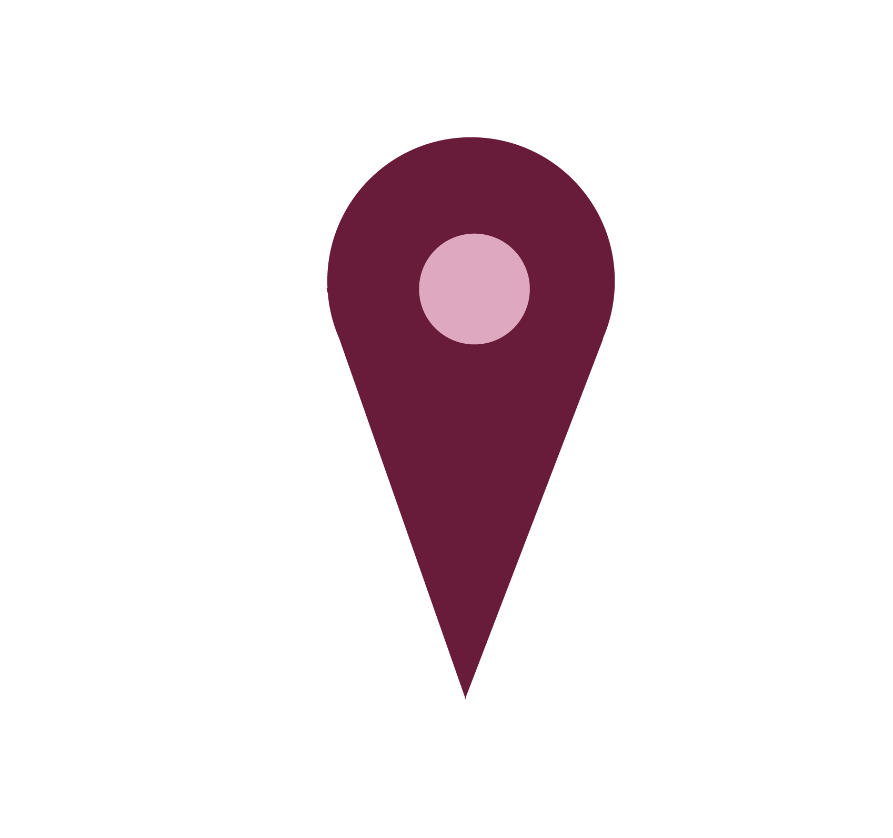
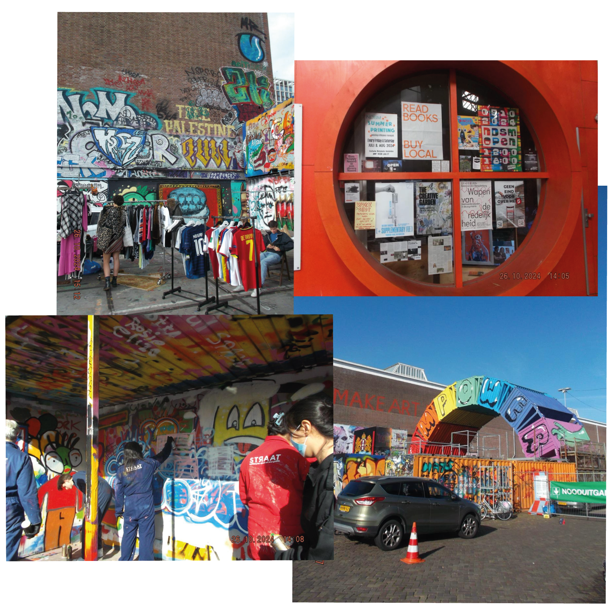
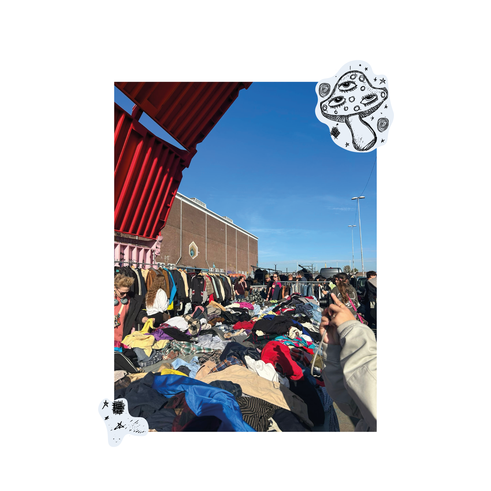

Data & Locatie
Ben je al overtuigd om een keertje langs te gaan? En vraag je je af waar en wanneer je moet gaan? Lees dan gauw verder!
Locatie NDSM
De IJhallen vindt plaats op NDSM-werf in Amsterdam Noord. Dit is een authentieke locatie met een creatieve en industriële sfeer. Het gebied staat bekend om de enorme loodsen, graffiti-wanden kunstzinnige uitstraling. Naast IJhallen worden er regelmatig evenmenten gehouden zoals muziekfestivals, kunstexposities, of open lucht bios. De locatie is makkelijk te bereiken met ov, en je kan het pontje nemen via Amsterdam Centraal voor een leuke tocht over het IJ.

De loods en meer
In de grote loods worden dus vaak evenementen gehouden. De hal is een indrukwekkend overblijfsel van de tijd dat het gebied een scheepswerf was. De IJhallen bevindt zich vaak binnen en buiten, dus bij een bezoekje aan de IJhallen kan je dus een kijkje nemen in de grote loods. Daarnaast zijn er buiten de loods ook evenementen als workshops graffiti spuiten. Of je nou beginner of pro bent, de workshop is geschikt voor iedereen.
Data
Elke maand is er één weekend waarin de markt opgezet staat. Zo'n 750 verkopers zetten dan hun kraam op. Als je zelf als verkoper op de markt wil staan, dan kan je er zelf een kraam huren. Bezoekers kunnen een toegangkaartje kopen voor €6,00. Een goedkoop en duurzaam uitje dus!
